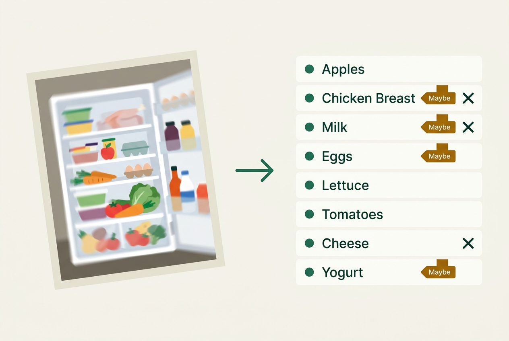
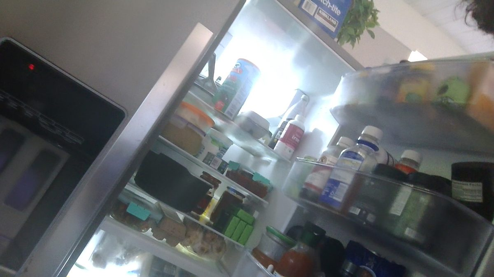
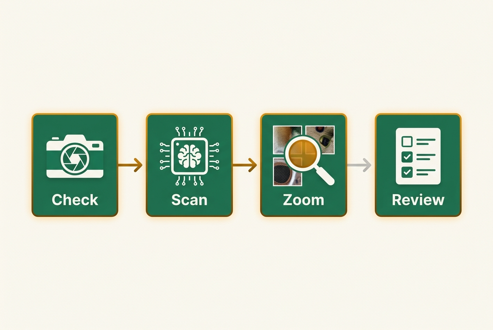

Engineering plan · In progress
Plan: Fridge scan that reads hard photos, blurry and clear

Purpose
Make the fridge scan identify the food in two very different kinds of hard photo:
- Blurry photos like the reference webcam frame: 1920×1080, tilted about 25°, motion-blurred, back-lit, with a door bin swinging toward the camera.
- Large, clear photos like the reference phone photo: 4284×5712 (24 MP), sharp, but with 40+ small items whose labels shrink to a few pixels once the photo is compressed to fit Gemini's image budget.
Today's scan silently drops anything it isn't sure of. The new scan shows everything it sees. Items it is unsure about are marked "Maybe" with alternatives, and in the worst case the user deletes a wrong item with one button press.
Problem

Camera Roll/WIN_20261024_14_05_41_Pro.jpg). The clear phone photo of the same fridge (Downloads/unnamed.jpg) is the second test photo, and the source of the answer key. It is not shown here because it contains prescription labels.Why the blurry photo fails
| Difficulty | Evidence | Current code |
|---|---|---|
| Motion blur | The most damaging quality problem for vision models: it cut the odds of a correct product ID by 88%. The best model fell from 98% to 75% accuracy, and to 69% when blur, rotation and framing problems combined (CHI '26, 1,859 real photos, GPT-4.1 and Gemini 2.5 Flash among those tested). | The prompt says to leave out anything uncertain, so blurry items vanish. |
| Fixing it afterwards | Deblurring or restoration before the model "recover only a fraction of lost performance and occasionally hurt accuracy" (Visual Quality Paradox study). Enlarging a crop adds no information (2610.09313, Prop. on interpolation). | Nothing; and the earlier draft of this plan proposed enlarging crops, which is now dropped. |
| About 25° tilt | Rotation significantly lowers identification in the CHI '26 study; Google's tips say to send correctly rotated images. | EXIF orientation isn't baked in, and small tilts are never corrected. |
| Back-light | The fridge lamp washes out the top shelf. | No exposure warning. |
Why the clear photo is harder than it looks
| Difficulty | Evidence | Current code |
|---|---|---|
| Too few image tokens per item | A whole image sent within N tokens gives an object at most m·√(N/(W·H)) tokens per side, so doubling the budget only gets 41% more detail per object (2610.09313, 177,000 requests on 797 images, Gemini 3.8 among the models tested). A label 100 px tall in the 24 MP original ends up a fraction of one token. | The gallery photo is resized to 2048 px (added earlier this session), then compressed into about 1,120 tokens. The original pixels are thrown away before anything can zoom. |
| Too many items per call | "At fixed detail, recall falls as one call must report more targets." 40+ items in one call is worse than 10 in each of four. | One call for the whole photo. |
| Overconfident misses | A clean photo doesn't produce "guess" items for small door labels; they just get missed. | The planned zoom pass only triggered on guesses, so it would never run on a clean photo. |
| Truly hidden items | Drawers behind frosted plastic and bags. No one can name everything in them. | Scoring them as misses would make any target unfair. |
Solution

- Measure first. An eval harness scores the real scan against a hand-written answer key split into three tiers (readable, recognizable, hidden), reporting recall, precision, latency and cost.
- Blurry photos: capture a better frame instead of repairing a bad one.
- Sharpest of a burst: when the user taps the shutter, take 4 frames over about 0.6 s and keep the sharpest (Laplacian variance, the same method Apple's sample code uses for bracketed sequences). This targets exactly the hand-shake blur in the reference photo.
- Quality warning: if even the best frame is blurry or over-exposed, say so ("Hold steady and retake") with Use anyway.
- Straighten: bake in EXIF orientation. Pass 1 also reports the photo's tilt; above 10°, the original is rotated before any crops are cut.
- A second, steady photo of the door (up to 3 photos per scan).
- No deblurring or upscaling: the evidence says they don't help.
- Clear photos: give each item more real pixels.
- Keep the original: stop resizing at pick time. Keep the full-resolution bytes in memory and derive what gets uploaded from them, so upload size stays bounded and crops have native pixels. Camera capture moves from
veryHigh(about 1080p) tomax. - Tiles: for a large photo, pass 1 sees a 2048 px overview. Overlapping native-resolution tiles (zones, or a 2×2 grid) are then scanned in parallel calls. Two rules from 2610.09313 make splitting safe: no tile may be lower-resolution than the overview, and tiles overlap by at least one item's width (about 12% of the side). Under those rules splitting "never significantly lowered recall" and raised it by up to 28 points.
- Merge: each tile's boxes are mapped back to full-photo coordinates and duplicates removed by box overlap plus name.
- Keep the original: stop resizing at pick time. Keep the full-resolution bytes in memory and derive what gets uploaded from them, so upload size stays bounded and crops have native pixels. Camera capture moves from
- Both: Scan v2 prompt. Zone by zone with a count first, never omit, a confidence per item (
sure/likely/guess), up to two alternatives, a box,isFood, and the photo's tilt. Name what's inside containers. - Both: targeted zoom. Native-resolution crops of
guessitems, and of zones whose stated count exceeds the items listed, are re-checked in one call. On blurry photos this mostly helps with framing and background clutter; it can't add sharpness. - Review. Every food item goes into the staged drafts. Unsure items get an amber Maybe badge, the tile ✕ deletes in one press, and the edit sheet offers alternatives as chips.
Budget agreed with the owner: about 15 s and about 2× today's cost per scan; up to $5 of real API calls for evaluation. Tiling multiplies calls, so it runs in parallel to hold latency, and the eval decides whether its accuracy gain is worth the cost. If it isn't within 2×, the plan reports that and asks before shipping it.
Success targets
| Metric | Definition | Target |
|---|---|---|
| Recall, blurry photo | Readable + recognizable items visible in the photo that appear in the output (sure or Maybe; alternatives count) | ≥ 70% |
| Recall, clear photo | Readable + recognizable items in the answer key | ≥ 90% |
| Hidden tier | Drawer and bagged items found | Reported only, no target |
| Sure precision | Items marked sure that are correct | ≥ 90% |
| Non-food leaks | Medicine, supplements or skincare added as food | 0 |
| Latency | Median wall time, including tiles and zoom | ≤ 15 s |
| Cost | Median tokens × list price, from usageMetadata | ≤ 2× the Phase 1 baseline (otherwise ask) |
Relevant Files
Existing Files
- existing
lib/main.dart—FridgePhotoFoodAgent(model, request, prompt, schema, parser);FridgeCameraSheet(camera atResolutionPreset.veryHigh, gallery picker resized to 2048 px);FridgePageState._takeFridgePhoto;FoodItem. - existing
lib/fridge/fridge_scan_dialog.dart— progress, retry and failure UI. - existing
lib/fridge/fridge_item_card.dart,lib/fridge/selectable_fridge_grid.dart— tiles; the Maybe badge goes here. - existing
lib/ai/ai_retry.dart—runWithAbortableAiRetry; every scan call, including each tile, goes through it. - existing
third_party/camera_web/— patched web camera; burst capture on web goes through it. - existing
test/fridge_food_recognition_test.dart,test/fridge_scan_dialog_test.dart,test/fridge_camera_sheet_test.dart,test/fridge_save_workflow_test.dart,test/large_text_test.dart,test/accessibility_guidelines_test.dart— regression coverage. - existing
pubspec.yaml— promoteimage4.10.1 (already in the lockfile, pure Dart, works on web) to a direct dependency.
New Files
- new
lib/fridge/scan/fridge_scan_service.dart— scan moved out ofmain.dart: overview pass, tile pass, zoom pass, merge. - new
lib/fridge/scan/scan_models.dart—ScannedItem,ScanResponse(items + reported tilt + zone counts), schema. - new
lib/fridge/scan/photo_prep.dart— orientation bake, deskew, overview downscale, tile planner, native crops, blur and exposure scores. Runs in an isolate on mobile. - new
lib/fridge/scan/scan_merge.dart— maps tile and crop boxes to full-photo coordinates; dedupes by box overlap and name; keeps the highest confidence. - new
lib/fridge/burst_capture.dart— takes N frames, scores them and returns the sharpest. - new
tool/scan_eval/scan_eval_test.dart,tool/scan_eval/answer_key.json,tool/scan_eval/photos/(git-ignored),tool/scan_eval/results/— live eval, outsidetest/. - new
test/photo_prep_test.dart,test/scan_merge_test.dart,test/burst_capture_test.dart,test/fridge_maybe_badge_test.dart— offline tests.
Implementation Phases
IMPORTANT: Execute every phase and task step by step, in order, top to bottom.
Status markers: [] idle · [wip] in progress · [x] complete · [f] failed. All start as []; the Build Plan workflow updates them as it works.
[x] Phase 1: Answer key, eval harness, baseline
1.1. Answer key
[x]Copy both photos totool/scan_eval/photos/; add it to.gitignore.[x]Writeanswer_key.jsonfrom the draft in Notes. Each item gets accepted names, zone,isFood,tier(readable/recognizable/hidden) andvisibleInBlurryPhoto.[x]The owner confirms or corrects it before any baseline number is trusted. Confirmed 2026-10-25: the green Kirkland boxes are butter; the top-right door shelf is medicine and supplements. Names refined from native-resolution crops.[x]Ask the owner for 3 more photos (another fridge or pantry, a grocery bag, a dim photo) and add short keys for them. Done 2026-10-25: the owner chose to work with the two photos plus a 0.7 s, 60 fps webcam clip of the blurry shot (tool/scan_eval/photos/webcam_clip.mp4), used in Phase 5 as a real burst.
1.2. Move the scan out of main.dart
[x]MoveFridgePhotoFoodAgentunchanged intolib/fridge/scan/fridge_scan_service.dart, re-exported frommain.dart.[x]ReturnusageMetadatatoken counts with the items.
1.3. Eval harness
[x]Run the selected variant 3× per photo; score per tier, with matching that is lowercase, singular, token overlap on accepted names, plus alternatives. Writeresults/<date>-<variant>.mdwith hits, misses, false items, latency and cost.[x]Keep a spend ledger from real token counts inresults/ledger.json; refuse a run that could take the total past $4.50.[x]Run the baseline (today's code, including today's 2048 px gallery resize) on both photos.
1.4. Testing Strategy
Scorer unit tests run offline (synonyms, plurals, alternatives, tiers, duplicates). The refactor must not change the normal suite.
[x]flutter test test/fridge_food_recognition_test.dart test/fridge_scan_dialog_test.dart— the move changed no behavior.[x]flutter test— 420+ passing, only the 11 known failures.[x]flutter test tool/scan_eval/scan_eval_test.dart --dart-define=SCAN_VARIANT=baseline --dart-define=GEMINI_API_KEY=…— baseline report and ledger entry exist.
[wip] Phase 2: Keep the pixels, straighten, and Scan v2
2.1. Keep the original
[x]Gallery: remove the 2048 pxmaxWidth/maxHeightandimageQualityadded earlier, so the picker returns the original. Camera:ResolutionPreset.max, falling back toveryHighif initialization fails.[wip]photo_prep.dart: bake EXIF orientation, keep the decoded original in memory, and derive a 2048 px q85 overview for upload. Uploads never carry the full original. On web, time a 24 MP decode; if it's over 1.5 s, cap the kept original at 4096 px and note it.
2.2. Prompt and schema v2
[x]Remove the "OMIT it entirely" rule: list every food or drink, give a best guess, mark itguess, and add up to two alternatives.[x]Zone first, with a count before each zone's items. Name contents, not containers.[x]Each item getsconfidence,alternatives,location,box_2d(0–1000),photoIndexandisFood. The response also hastiltDegrees(the clockwise angle the photo needs to be level).isFood: falseitems are dropped in code and counted.[x]Keep theFoodTypeenum, the placeholder filter and expiry estimates.
2.3. Straighten
[x]If|tiltDegrees| > 10, rotate the kept original (bicubic, expand canvas) before Phase 3 cuts any tiles or crops; boxes from pass 1 are rotated with it. Pass 1 itself is never re-run for tilt.
2.4. Variants to measure
| Variant | Change | Question it answers |
|---|---|---|
v2-high | Prompt and schema v2; overview at MEDIA_RESOLUTION_HIGH | What does never-omit plus zones buy on its own? |
v2-ultra | Overview at per-part ULTRA_HIGH (2240 tokens, about +$0.002) | Does more budget on one image help? Theory predicts only about +41% detail per object. |
v2-medium | Thinking medium | Do blurry items need more reasoning? |
2.5. Testing Strategy
[x]flutter test test/photo_prep_test.dart test/fridge_food_recognition_test.dart— orientation bake, overview size, rotation of boxes, v2 parsing, never-omit,isFoodfiltering.[x]Live:v2-high,v2-ultra,v2-mediumon both photos; keep the best variant within budget.[wip]The chosen variant beats the baseline on both photos, with sure precision ≥ 90% and 0 leaks.
[] Phase 3: Tiles for large photos, zoom for unsure regions
3.1. Tile planner (clear, large photos)
[]Tile only when the kept original's long side is at least 1.5× the overview's (otherwise tiles would show no new pixels). A tile is never smaller in scale than the overview.[]Two plans to compare:grid(2×2 with about 12% overlap) andzones(main compartment vs door, split from pass 1's zone boxes, padded 12%). Each tile is at most 2048 px on its long side at native scale; anything larger is split further.[]Run tile calls in parallel (at most 4), each throughrunWithAbortableAiRetry, with an overall 15 s deadline. A tile that misses the deadline is dropped and pass-1 items stand for that region.
3.2. Targeted zoom (both kinds)
[]Trigger onguessitems or zones whose count exceeds their items. Cut native-resolution crops (12% padding, overlapping boxes merged, at most 6), with no upscaling, and re-check them in one call.[]A crop result replaces a pass-1 item only when its confidence is higher; an empty crop never removes an item.
3.3. Merge
[]scan_merge.dart: map tile and crop boxes to full-photo coordinates; treat items as the same if their boxes overlap (IoU ≥ 0.3) and their names match (or one is an alternative of the other). Keep the higher confidence and the union of alternatives. Items in overlap regions must not double-count.
3.4. Agentic vision (optional spike)
[]One call withcodeExecutionon Argon, as a comparison only. In 2610.09313 Gemini's own zoom agent used about 376k input tokens per image, so it ships only if the eval shows it meeting the cost target, which is unlikely. If structured output doesn't work alongside the tool, mark[f].
3.5. Testing Strategy
[]flutter test test/scan_merge_test.dart test/photo_prep_test.dart— tile planner (no tile zooms out, overlap ≥ 12%, small photos skip tiling), coordinate mapping, dedupe in overlaps, confidence-only replacement, deadline drop.[]Live:v3-grid,v3-zones,v3-zoomand the best combination on both photos. Pick the cheapest that meets the recall targets within 15 s; if none fits the 2× cost budget, report the numbers and ask the owner.
[] Phase 4: Maybe items in the fridge
4.1. Data
[]OptionalscanReviewonFoodItem(confidence plus alternatives), stored only while set; old documents load fine. No rules change.[]Editing the item, or tapping "Looks right", clears it.
4.2. UI
[]Tile: an amber "Maybe" badge with the semantic label "Maybe {name}, check this item". The tile ✕ stays the one-press delete.[]Edit sheet: alternative chips ("Or: salsa · hot sauce") and a "Looks right" button.[]Snackbar: "Added 18 items, 6 to check".[]The meal agent prompt marks Maybe items as unconfirmed.
4.3. Testing Strategy
[]flutter test test/fridge_maybe_badge_test.dart test/fridge_save_workflow_test.dart test/fridge_edit_sequences_test.dart— badge, delete, alternative chip, clear on edit, survives save and reload.[]flutter test test/large_text_test.dart test/accessibility_guidelines_test.dart— fits at 200% text, no new tap-target or label failures.
[] Phase 5: Capture: sharpest-of-burst, quality warning, up to 3 photos
5.1. Sharpest of a burst
[]burst_capture.dart: on shutter, calltakePicture4 times as fast as the platform allows (budget 0.8 s; fewer frames if it's slower). Score each frame's Laplacian variance on a 512 px grayscale copy in an isolate, and keep the sharpest. The shutter button shows "Hold still…" during the burst.[]Measure how longtakePicturetakes on web (patchedcamera_web) and on Android. If a burst exceeds 1.5 s on a platform, fall back to a single frame there and note it.
5.2. Quality warning
[]Calibrate blur and over-exposure thresholds on all eval photos: the blurry reference must trip the warning and the clear one must not.[]If the chosen frame still trips: show it with "Looks blurry, hold steady and retake" or "Bright light behind, try another angle", plus Retake and Use anyway. Never block the scan.
5.3. Multiple photos
[]"Add another photo": up to 3 removable thumbnails, then "Scan 3 photos". Each photo gets its own overview and tiles; items are merged across photos by name plus zone, without boxes, since boxes don't line up between photos.[]Scan dialog: first thumbnail and "Reading 3 photos…".
5.4. Testing Strategy
[]flutter test test/burst_capture_test.dart test/fridge_camera_sheet_test.dart test/fridge_scan_dialog_test.dart— sharpest frame chosen from synthetic sharp and blurred frames; single-frame fallback; warning shows and can be bypassed; photo strip; request carries N photos.[]Live: the owner retakes the reference shot on the webcam with burst on; compare its blur score and recall with the original blurry photo. Then the blurry photo plus a steady door close-up (final-multi): door recall improves with no duplicates.
[] Phase 6: Final eval and write-up
[]Run the shipped configuration 3× on every eval photo; saveresults/final.mdnext to the baseline.[]Manually scan both reference photos in the running web app and confirm the Maybe flow end to end.[]Updatedocs/TECHNICAL_OVERVIEW.md§4.1 with the before and after numbers and the two research-backed ideas (sharpest-of-burst for blur, native-pixel tiles for large photos).
6.1. Testing Strategy
[]flutter analyze lib test tool— no new issues.[]flutter test— no new failures beyond the 11 known ones.
Validation Commands
Execute these commands to validate the entire plan is complete:
[]flutter analyze lib test tool— clean apart from the knownapp_theme.dart:56info.[]flutter test— only the 11 known failures remain.[]tool/scan_eval/results/final.md— every Success target met, or each miss written down with its number.[]tool/scan_eval/results/ledger.json— total real spend ≤ $5.[]git status— no eval photos tracked.
Questionables
The "green can" is Knik white cheese, not tuna
The tall green can on the top shelf is Knik white cheese (35 oz); the tuna is the small can on the second shelf. Both are in the draft key. Confirm in Phase 1.1.
Tiling may cost more than 2×
Each tile is a separate Argon call with its own thinking tokens. Parallel calls keep latency near one call, but cost scales with the number of tiles. Each tile lists fewer items, so output per call shrinks, but not to zero. The eval measures it, and if the cheapest plan that meets the target is over 2×, the owner decides.
The 2048 px gallery resize added earlier this session is reversed
It cut upload time, but it threw away the pixels that tiles need. The new design keeps the original in memory and uploads only a bounded overview plus native-resolution tiles, so upload size stays bounded.
Tilt comes from the model, not image processing
Detecting a fridge's tilt classically (shelf lines) is fragile. Pass 1 already looks at the photo, so it reports tiltDegrees at no extra cost, and only the tiles and crops use the straightened original. If the reported tilt proves unreliable in the eval, straightening is turned off.
Burst capture depends on platform speed
On web, takePicture grabs a video frame, which should be fast. On phones it is a full still capture and may be slow. Phase 5.1 measures it and falls back to a single frame where a burst would make the user wait.
Non-food items are dropped, not shown as Maybe
The door holds amoxicillin, supplements and a skincare serum. Medicine shouldn't reach a meal agent in a diabetes app. To reverse, show them as Maybe in category Other.
Maybe items go straight into the fridge
This matches "worst case the user deletes it with one button press": staged drafts, a badge, and the existing ✕. Nothing is final until Save.
Argon's price doubles on Dec 1, 2026
From $2/$10 to $4/$20 per 1M tokens. The cost target is relative to the baseline, so it holds; the absolute cost per scan doubles in December regardless.
Notes
Draft answer key (from the clear photo; confirm in Phase 1.1)
| Zone | Readable | Recognizable | Hidden | In blurry photo? |
|---|---|---|---|---|
| Top shelf | Knik white cheese (35 oz) | Egg carton (white) · glass bottle (sparkling water?) · dark sauce bottle | Orange food in the strainer pot | Cheese, eggs, dark bottle |
| Shelf 2 | Stonyfield organic Greek yogurt · tuna can | Orange-lid tub (cottage cheese or labneh?) · glass dish of spread (hummus?) · teal-clip dish of tomato stew | Yes, blurry | |
| Shelf 3 | Butter (green-wrapped sticks) | Black pot (cooked dish) · red jam jar · brown jar (date syrup or jam?) | Yellow item behind | Yes, except the yellow item |
| Shelf 4 | Teal-clip dish of chopped salad · brown egg carton · garlic or onions | Yes | ||
| Lower shelf and drawers | Jar of corn · lidded pot of soup · fresh dill · melon | Cheese block · eggplant? · bread · bulgur or semolina · cucumbers or zucchini · avocado? | No | |
| Door | Kvass (fermented tonic) · Fontana Farms peppercorn dressing · organic ketchup · Philadelphia cream cheese · Hidden Valley ranch · organic lactose-free milk · 2% milk | Honey jar (green lid) · flax seeds · spice shakers | Kvass, honey, dressing (blurry) | |
| Not food (must not be added) | Mother's Promise liquid iron · Thorne, Nature's Bounty magnesium and Pure Encapsulations bottles · protein or supplement tubs · amoxicillin · Innisfree serum · Kirkland plastic wrap · basil plant on top of the fridge | |||
Research behind the design
| Source | Finding | Used for |
|---|---|---|
| Shi, Gan, Jiang, "Why VLMs Miss Small Objects, and When Zooming In Is Safe" (arXiv 2610.09313, Oct 2026; 177k requests, 797 images, 11 models including Gemini 3.8) | Detail per object is limited by tokens per object side; doubling the budget gives only +41%. Recall falls as one call must list more items. Splitting is safe if no view zooms out and views overlap by one object: it never significantly lowered recall and raised it by up to +0.28. Enlarging pixels adds no information. Gemini's zoom agent used about 376k input tokens per image. | Keep originals; native-pixel tiles with overlap; no upscaling; agentic zoom demoted to a spike; ULTRA_HIGH tested but expected to help little |
| Garg et al., "It's trained by non-disabled people" (CHI '26; 1,859 real product photos) | Best model 98% on good photos, 75% with quality problems, 69% when they combine. Blur cut the odds of a correct ID by 88%; rotation was also significant. | Blur is the top priority, tackled at capture; straightening |
| "Demystifying the Visual Quality Paradox in MLLMs" (arXiv 2506.15645) | Restoration pipelines before the model recover only part of the lost accuracy and sometimes hurt; model performance doesn't follow human-judged image quality. | No deblurring or enhancement step |
| Apple, "Finding the sharpest image in a sequence of captured images" (Accelerate sample) | Rank a burst by Laplacian sharpness and keep the best, a standard scanner technique. | Sharpest-of-burst capture |
| Forky AI, "Fridge-to-recipe prompt engineering" | One open prompt drops door and edge items and names containers; zones with counts fixed this. Per-shelf crops gave about +8% at 3× latency (sequential). | Zone-first prompt; tiles run in parallel |
| Google Gemini docs (media resolution, image understanding, code execution) | HIGH = 1120 tokens and is recommended; ULTRA_HIGH = 2240, per-part only. Boxes in box_2d 0–1000. Send rotated-correctly, non-blurry images. Image code execution is official only on Gemini 3 Flash. | Schema, resolution variants, spike caveat |
| Roboflow OCR eval (earlier debate) | Argon low 85.7% vs Pro high 73.1% at reading labels. | Why the scan runs on Argon low |
Rejected approaches
- Deblurring or super-resolution before upload: no evidence it helps vision models, some that it hurts, and a blurry photo has no detail to recover.
- Enlarging crops cut from the overview: no new information. Crops come from the original pixels instead.
- Sending the full 24 MP original: the model compresses it to the same token budget anyway, and the upload would be several MB.
- Gemini agentic zoom as the default: about 376k input tokens per image in the study, far over budget.
- On-device detector (YOLO): collapsed on real fridges for Forky, and would need training data this project doesn't have.
Cost estimate for evaluation
Per Argon-low call: about $0.02–$0.045 at today's prices. Tile variants run 3–5 calls per scan. Estimated total: baseline 6, Phase 2 18, Phase 3 about 60 (tiles, zoom, combinations), Phase 5 and 6 about 20. That is roughly 100 calls, about $2.50–$4, under the $4.50 hard cap that the harness enforces. If the cap is reached, the remaining variants are skipped and listed as untested.
Amendments
2026-10-24T22:20:00Z — Revision 2 before execution: improvements for clear photos as well as blurry ones
The owner asked for improvements for both kinds of photo. New research: native-pixel tiles with overlap and the keep-the-original change for large clear photos; sharpest-of-burst capture and model-reported tilt for blurry photos; no upscaling or deblurring; agentic zoom demoted after its measured token cost; the answer key split into tiers; the clear-photo recall target raised to 90% on readable and recognizable items. The plan had not been executed, so no status markers changed.